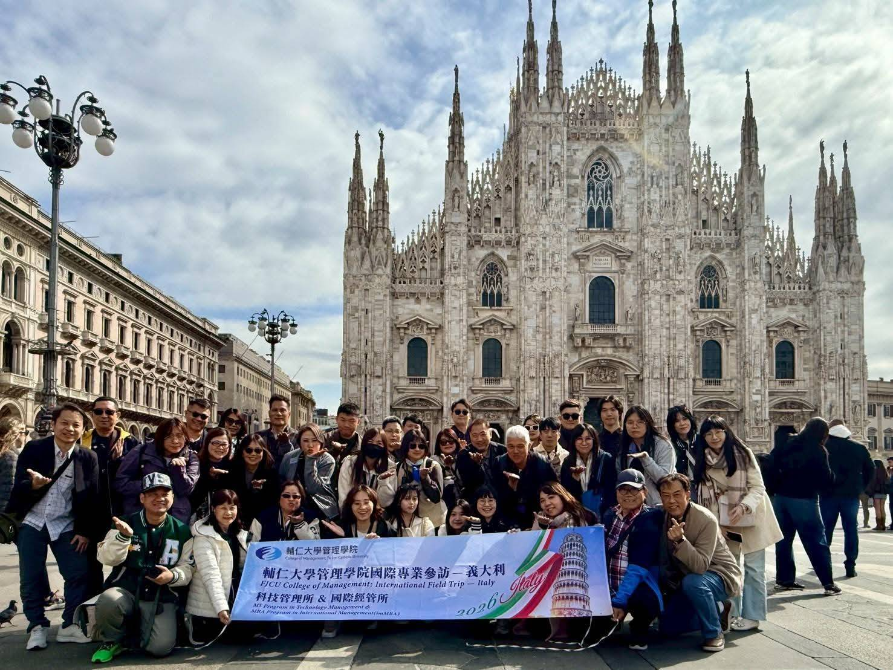

English, every course
All teaching is in English. The classroom is built for students who will work across markets, languages, and cultures.

Study in English in Taipei with classmates from more than 30 countries. AACSB accredited, with dual-master’s pathways in the United States, France, and Spain.
All teaching is in English. The classroom is built for students who will work across markets, languages, and cultures.
Year one at Fu Jen. Year two at UM-Flint (USA), KEDGE (France), or IQS (Spain)—two master’s degrees in two years if both requirements are met.
International tuition is NT$123,000 per semester. President’s Scholarship of NT$40,600 or preferential fees of NT$68,660 may apply.
International applicants may apply 14 September – 14 October. Fall intake typically runs from January to June; spring from mid-October to late December.
Source: official Fu Jen imMBA announcements, College of Management.